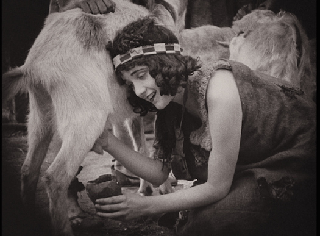
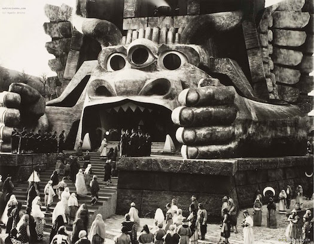

In 1672, the famed conquistador Don Lope Jaime Sebastien Gurrero Gonzalez de Caldwell was captured by cannibals deep within the Amazon jungle. He was tried, convicted and eaten by the Indian chief. But the natives underestimated the guile of the great Spanish warrior, as he himself swallowed a machete before being eaten. Once inside the chief’s stomach, Don Lope regurgitated the machete and hacked his way to freedom. He then proceeded to eat the entire tribe. Sickened by the hellish humidity of the jungle, he decided to journey north. For ten years he cut through jungle, sliced through beasts, stomped on insects, conquered savages, and laid waste to cities. Finally, he espied the bucolic utopia of his dreams. He dropped to his knees and christened it East Caldwell. The population of one soon became two, then ten, and so on. All were welcome. He married thirteen women, and each woman gave birth to thirteen sons.
The first settlers were a simple, honest people - content to herd goats and grow lettuce. Life was peaceful... but stagnant. Change was needed. Don Lope killed the weak and the ugly and used their bones to build the first cathedral of East Caldwell. A great town was born.
